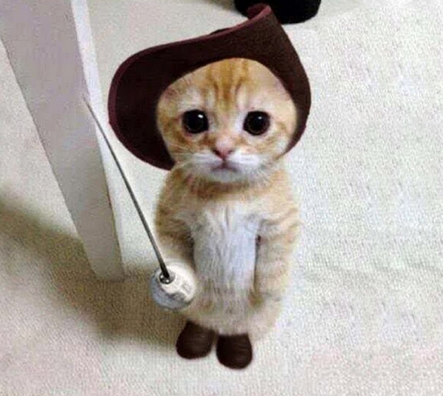

Nuestras secciones de ayuda:
Gatitos Perritos
Perritos
Se han dado cuenta que nosotros acá en Chile hemos cultivado está cuestión de la "PET MANIA". Esto de tener mascotas, todo el mundo con mascotas wn. Ahora... No se trata de tener cualquier mascota, No. Mientras más exótica la mascota, mas nivel te da, hasta las iguanas quedaron pasas de moda wn. Por ejemplo, en el caso mío, sabe lo que tengo de mascota yo? Tengo un noctulo, un Noctulo es un murciélago chico que vive en el desvan de mi casa, No nos vemos nunca, los dos trabajamos de noche... Ah